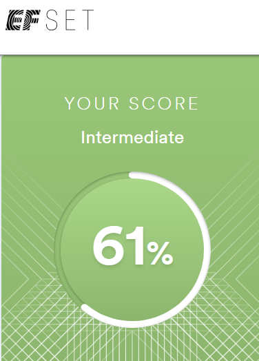
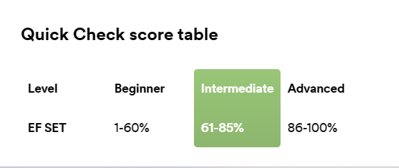

Natallia Alsheuskaya
Front-end Developer
Contacts:
- Location: Brest, Belarus
- Phone: +375298018780
- My Email
- My GitHub
- My Telegram
Summary:
My previous jobs helped me to understand that this isn’t an area where I would like to grow up and develop. One day I heard about programming.I found out that I can start programming without specialized education. I am very interested in programming because it is an industry where you should learn constantly. It means that your Job will never be boring. I like to study and discover new things. I believe that I can learn programming and become a good front-end developer in the future. My strengths: I’m not afraid of responsibility and problem solving, I’m a good team worker and I love googling.
Skills:
- HTML
- CSS
- JavaScript
Code example:
function multiply(a, b){
return a * b
}
Education:
- Brest State University of A.S.Pushkin
Courses:
Projects:
English:
B1 in progress
